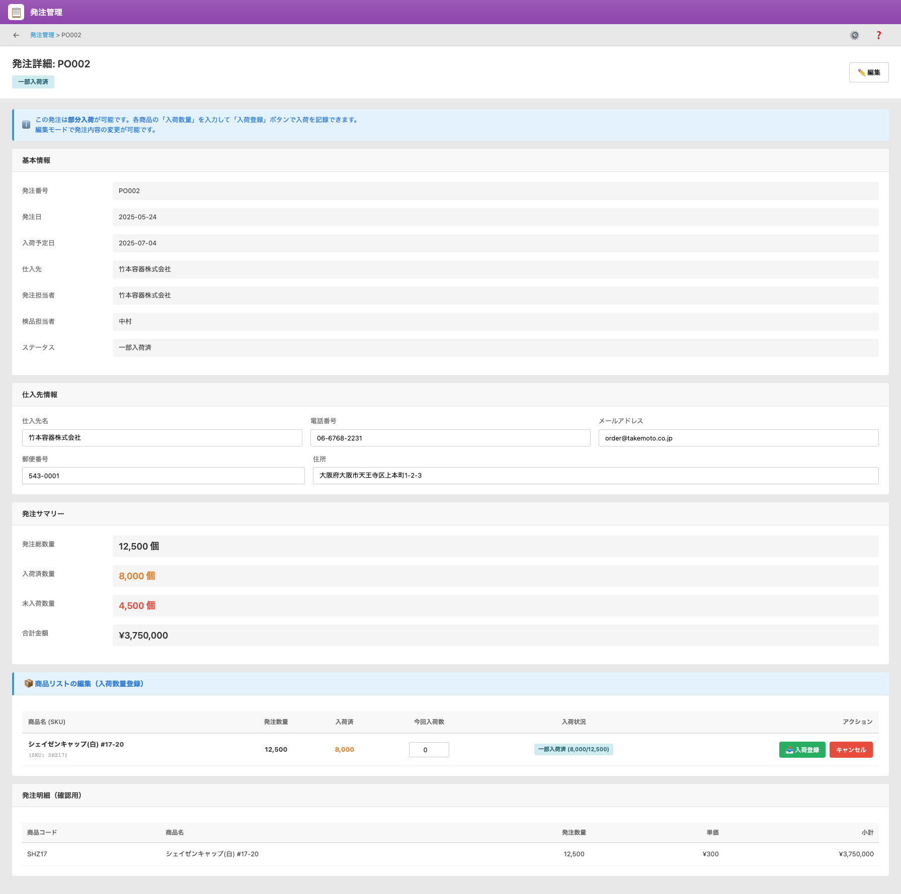

UI Spec
PO App
Version 1.0 / 作成日: ________
UI Screen Specification – 発注管理アプリ（PO App）
対象画面: 発注一覧画面 / 発注詳細画面
想定利用者: 購買担当・倉庫担当・検品担当（Credie 内部ユーザー）
1. 画面概要・目的（ビジネス上の役割）
発注管理アプリ（以下、PO App）は、仕入品の発注から入荷・検品までの進捗を管理し、
在庫反映の起点となるコア画面です。
発注一覧画面では、全ての発注レコードを一覧で把握し、入荷状況・検品状況・ステータスを確認します。
発注詳細画面では、個々の発注書の内容（発注先、発注数、入荷数、商品明細）を確認し、
商品ごとの入荷登録を行います。
1.1 本画面がカバーする業務
- 仕入先への発注内容の管理（発注日・入荷予定日・発注数量など）
- 入荷当日の入荷実績登録（商品ごとの今回入荷数の登録）
- 「未処理 / 発注済 / 一部入荷済 / 入荷済 / 検収済 / キャンセル」などステータス管理
- 在庫システムへの入荷反映のトリガーとなる情報の保持
2. User Scenario（利用者ストーリー）
2.1 購買担当
- 毎朝、発注一覧画面で「入荷予定日」が近い発注を確認する。
- 仕入先から連絡があった場合、発注詳細画面で内容・数量・入荷予定日を確認・修正する。
- 全量入荷・一部入荷の状況を確認し、必要に応じてステータスを更新する。
2.2 倉庫担当
- 実際に荷物が到着したら、該当の発注IDを開き、商品ごとに「今回入荷数」を入力して入荷登録を行う。
- 入荷登録が完了すると、在庫アプリ側の数量が更新される（システム連携）。
2.3 検品担当
- 入荷後、発注詳細画面で数量・品質を確認し、検品日・検品担当者・ステータス（検収済など）を更新する。
3. Business Impacts（期待される効果）
- 発注〜入荷〜検品の進捗を1つの画面群で把握できるため、状況確認の手間が削減される。
- 入荷登録と同時に在庫が更新されることで、過不足の早期検知と適正な在庫水準の維持に貢献する。
- 一部入荷・未入荷の状態を可視化することで、仕入先へのフォローや納期調整が行いやすくなる。
4. Scope / Out of Scope（本画面の範囲）
4.1 Scope
- 仕入先別・発注ID別の発注情報管理（一覧 / 詳細）
- 入荷予定日・入荷日・検品日の管理
- 商品ごとの「発注数 / 入荷数 / 今回入荷数」の管理
- ステータスの管理（未処理 / 発注済 / 一部入荷済 / 入荷済 / 検収済 / キャンセル 等）
- 入荷登録に伴う在庫更新のためのトリガー情報の保持
4.2 Out of Scope
- 仕入先との見積・価格交渉プロセス
- 支払処理（請求・支払承認・振込処理など）は別アプリ（AR/AP管理）側で管理
- 不良品の詳細な品質管理・クレーム処理フロー
5. 画面仕様（Screen Layout）
5.1 発注一覧画面（List）
PO App のトップ画面。全ての発注レコードが一覧表示され、発注状況と入荷状況を確認できます。
| 項目名 |
説明 |
| 発注ID |
発注レコードの一意ID。クリックで発注詳細画面へ遷移する（例: P0001）。 |
| 発注日 |
発注書を作成した日付。 |
| 入荷予定日 |
仕入先からの入荷予定日。 |
| 入荷日 |
実際に入荷が行われた日付。 |
| 検品日 |
検品作業が完了した日付。 |
| 商品 |
発注の代表商品名（SKUと名称）。一覧上では代表行として表示。 |
| 発注数 |
発注した合計数量。 |
| 入荷数 |
これまで入荷した数量の合計。 |
| 仕入先 |
発注先の企業名。 |
| 発注担当者 |
発注書を作成した担当者名。 |
| 検品担当者 |
検品を担当するユーザー名。 |
| ステータス |
発注の状態（未処理 / 発注済 / 一部入荷済 / 入荷済 / 検収済 / キャンセル など）。 |
| 操作 |
詳細ボタン。クリックすると発注詳細画面へ遷移。 |
5.1.1 一覧画面の主なUI要素
- 「発注一覧」ボタン：標準の一覧ビュー切り替え。
- 「新規発注」ボタン：新しい発注レコードを作成。
- 検索ボックス：発注番号などで検索。
- アクションメニュー：CSV出力などの標準機能。
- ページネーション：1–○件 / 全○件 とページ送り。
5.1.2 スクリーンショット
5.2 発注詳細画面（Detail）
個別の発注書の内容を表示・編集し、商品ごとの入荷登録を行う画面です。
5.2.1 セクション構成
- A. 基本情報
- B. 仕入先情報
- C. 発注サマリー
- D. 商品リスト（入荷登録用）
- E. 発注明細（確認用）
A. 基本情報
| 項目名 |
説明 |
| 発注番号 |
POの管理番号（例: P0002）。 |
| 発注日 |
発注書を作成した日付。 |
| 入荷予定日 |
仕入先からの入荷予定日。 |
| 入荷日 |
実際に入荷した日付。 |
| 検品日 |
検品を行った日付。 |
| 仕入先 |
発注先の企業名。 |
| 検品担当者 |
検品を担当したユーザー名。 |
| ステータス |
発注の現在ステータス（未処理 / 発注済 / 一部入荷済 / 入荷済 / 検収済 / キャンセル など）。 |
B. 仕入先情報
| 項目名 |
説明 |
| 仕入先名 |
取引先企業名。 |
| 電話番号 |
仕入先の電話番号。 |
| メールアドレス |
注文連絡用のメールアドレス。 |
| 郵便番号 |
仕入先の郵便番号。 |
| 住所 |
仕入先の住所。 |
C. 発注サマリー
| 項目名 |
説明 |
| 発注数量 |
発注した数量の合計。 |
| 入荷数量 |
これまでに入荷された数量の合計。 |
| 入荷未了数量 |
発注数量 − 入荷数量 など、未入荷分の参考値（UI 表示に合わせて定義）。 |
| 合計金額 |
全ての明細行の小計の合計額。 |
D. 商品リスト（入荷登録用）
倉庫担当が入荷登録を行うためのエリア。各商品ごとに「今回入荷数」を入力します。
| 項目名 |
説明 |
| 商品（SKU） |
SKUコードと商品名。 |
| 発注数 |
その商品に対する発注数量。 |
| 入荷数（累計） |
これまでに入荷した数量。 |
| 今回入荷数 |
今回入荷した数量を入力するテキストボックス。 |
| 入荷状況 |
未入荷 / 一部入荷 / 入荷済 などの状態表示。 |
| アクション |
「入荷登録」「キャンセル」ボタン。入荷登録により在庫へ反映される。 |
E. 発注明細（確認用）
| 項目名 |
説明 |
| 商品コード |
商品に紐づくコード。 |
| 商品名 |
表示名。 |
| 数量 |
発注数量。 |
| 単価 |
仕入単価。 |
| 小計 |
数量 × 単価。 |
5.2.2 主なボタン・操作
- 編集：詳細画面の各フィールドを編集可能にする標準ボタン。
- 入荷登録：D. 商品リストで入力した「今回入荷数」を確定し、入荷履歴・在庫に反映する。
- キャンセル：発注自体をキャンセル扱いとする（業務ルールに従って使用）。
- 保存：編集内容を保存。
5.2.3 スクリーンショット

図2. 発注詳細画面（PO Detail）
6. お客様に確認いただきたい点
- 一覧画面の表示項目（発注ID・入荷予定日・入荷数・ステータス など）は、日々の運用で必要十分でしょうか？
- ステータスの種類（未処理 / 発注済 / 一部入荷済 / 入荷済 / 検収済 / キャンセル）は、想定されている運用と一致していますか？
- 発注詳細画面の各セクション構成（基本情報 / 仕入先情報 / 発注サマリー / 商品リスト / 発注明細 / 入荷履歴）は、現状の業務フローをカバーできていますか？
- 入荷登録の単位は「商品ごと」で問題ないでしょうか？ 特殊な入荷パターン（別送・分納など）がある場合は追加要件として整理が必要です。
7. 開発向けメモ（内部用）
- UI は Kintone 標準フォームをベースに、kintone-common-v2.css に準拠して調整。
- 入荷登録時に、在庫アプリ（Material / Product のいずれか）へ在庫加算処理を行う前提。
- ステータス更新ロジック（自動 / 手動の切り分け）は別途ロジック設計シートにて定義。
- 将来的に PO のインポート / エクスポートを行う場合、発注ID・仕入先・商品コードの一意性に注意。